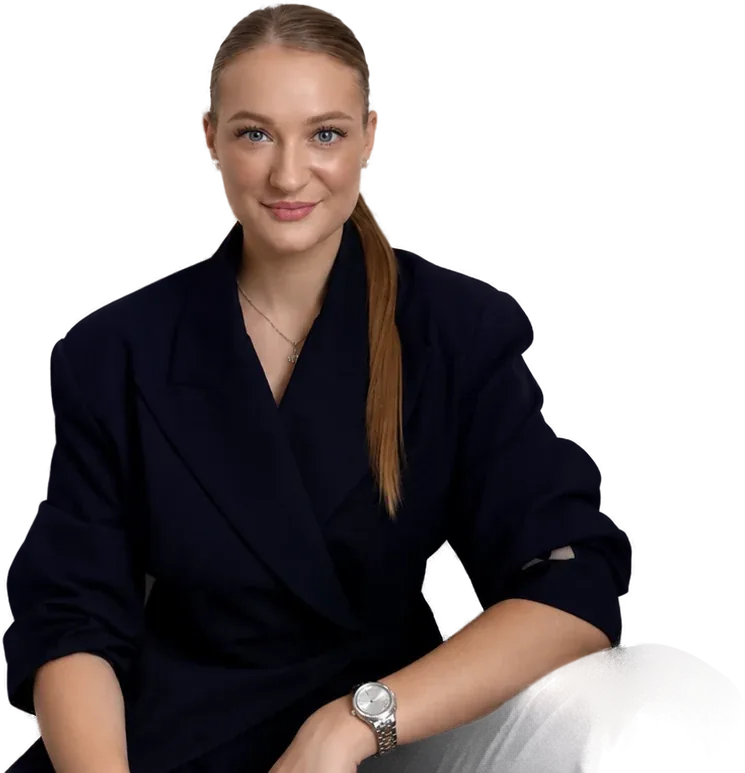
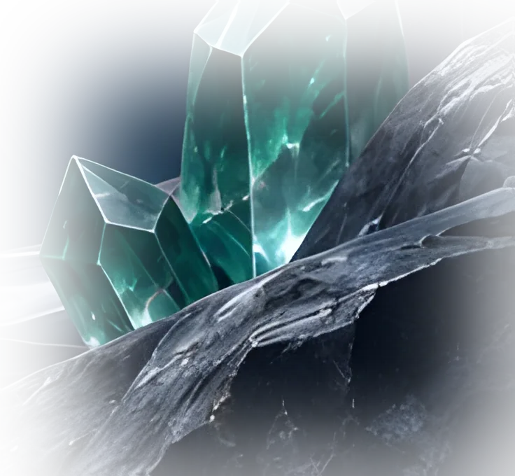
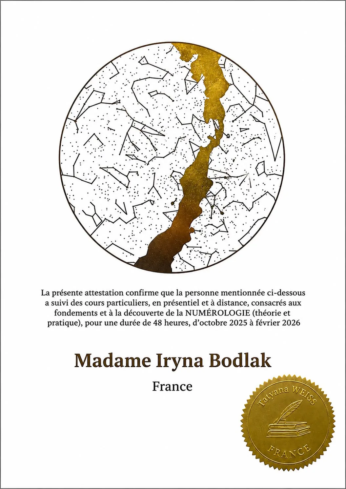
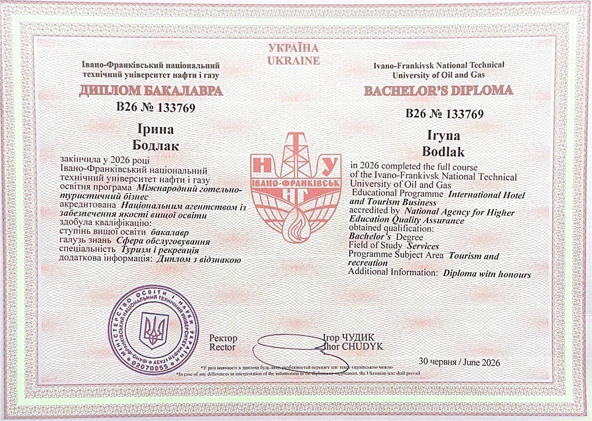
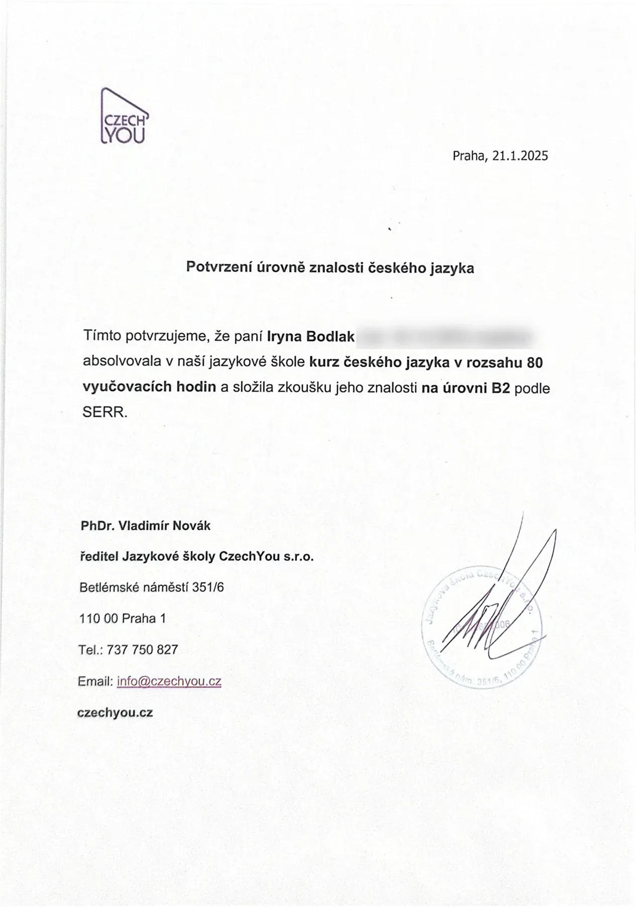

{{ T.t10 }}

{{ T.t26 }}
{{ T.t27 }}

{{ T.d1 }}
{{ T.d5 }}
{{ T.t49 }}
{{ T.q1 }}
{{ T.q2 }}
{{ T.q3 }}
{{ T.r2 }}
{{ f.a }}
{{ T.t72 }}
{{ b.t }}
{{ svc.lead }}
{{ T.t93 }} {{ svc.format }}


